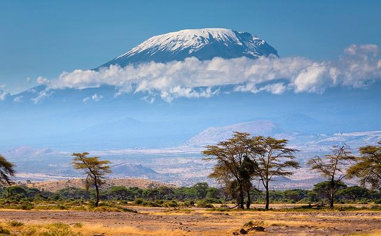
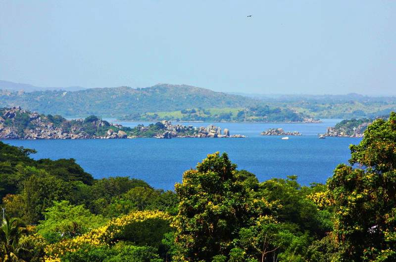
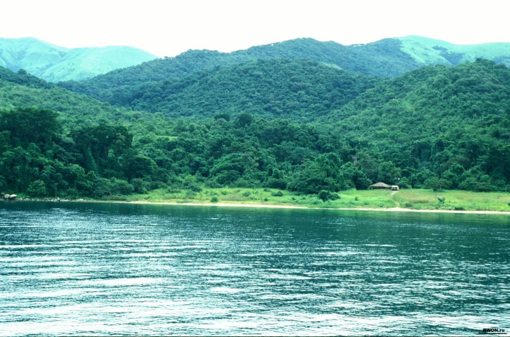
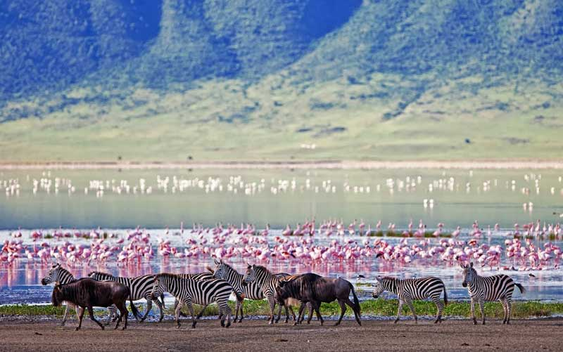
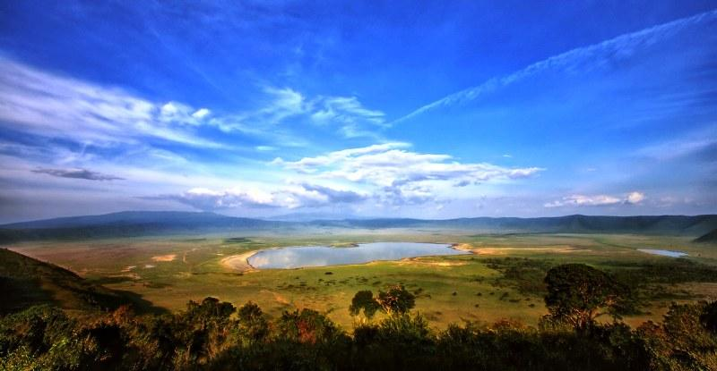
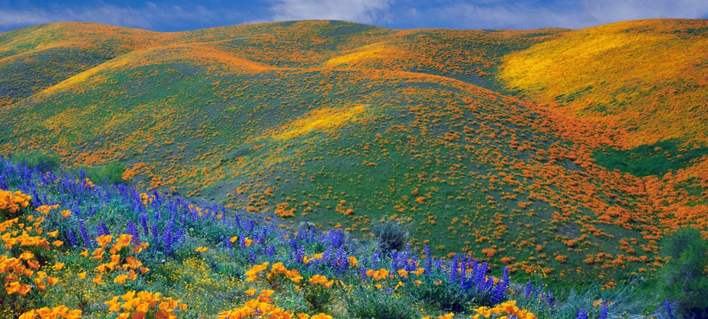
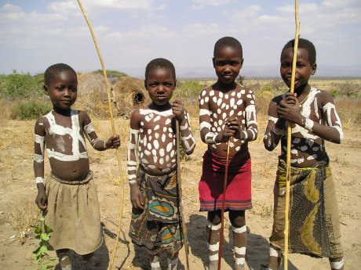
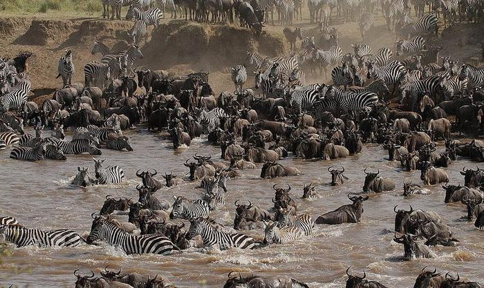
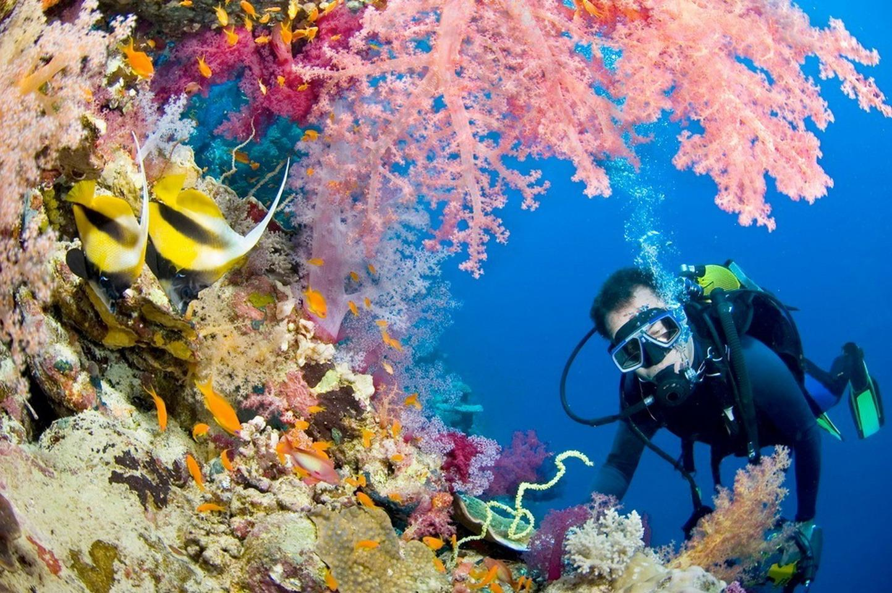
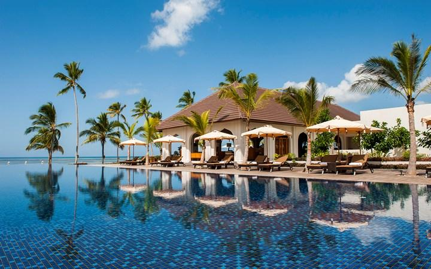

1. Самая безопасная африканская страна. Люди здесь улыбчивы и доброжелательны.
2. Самая большая часть страны (25%) отдана под природоохранные зоны.
3. Самое большое количество (20%) всех африканских животных, 30% всех африканских львов и 25% всех африканских гепардов и леопардов.
4. Самая большая отдельно стоящая гора в мире Килиманджаро (5895 м)
5. Самое большое озеро в Африке (второе в мире) Виктория.
6. Самое длинное озеро в мире и самое глубокое озеро в Африке (второе в мире после Байкала) Танганьика.
7. Самый большой в мире охотничий заказник Селус (55000 кв км).
8. Самый популярный в Африке национальный парк Серенгети, где наблюдается самая большая концентрация животных (4,5 млн).
9. Самый уникальный в мире кратер заповедника Нгоронгоро, в котором живет более 30000 животных и который называют 8-ым чудом света.
10. Самый уникальный и единственный в тропической Африке растительный национальный парк Китуло, получивший свой статус только из-за многообразия цветов (более 350 видов растений, 30 из которых эндемичны для данного места, 45 видов орхидей). Этот парк еще называют «Садом Богов» или «Цветочным Серенгети». Это – рай для ботаников.
11. На территории заповедника Нгоронгоро находится ущелье Олдувай, где были найдены останки самого древнего человека умелого – homo habilis
12. Около озера Эяси живет самое древнее в Африке племя хадзабе (более 10000 лет), которое доступно для посещения в этно-турах.
13. Самое большое количество из существующих объектов всемирного культурного и природного наследия, находящихся под охраной Юнеско, (6 из 7) показывает туристам Танзания (Серенгети, Нгоронгоро, Килиманджаро, Селус, Кондоа, Стоун Таун на Занзибаре).
14. Самое большое количество времени в году (10 месяцев) можно наблюдать самое уникальное явление в Африке – Великую миграцию животных.
15. Самый лучший дайвинг в мире по утверждению многих профессиональных дайвингистов находится у побережья Танзании, у островов Мафия и Пемба. Морской национальный парк у острова Мафия единственный в своем роде (более 200 видов кораллов, более 400 видов рыб с глубиной видимости 60 метров).
16. Пляжи Занзибара входят в пятерку самых лучших пляжей мира. Со слов наших туристов, на Занзибаре самый белый и самый мелкий песок в мире. На выставке МИТТ-2012 пляжи Занзибара стали самыми лучшими пляжами Африки за 2011 год.
17. На небольшом по размерам острове Занзибар (90х35 км) самая большая и разнообразная отельная база в Восточной Африке: более 200 отелей от отелей эконом класса за 8$ за ночь и до отелей-островов класса люкс за 1500$ за ночь.
18. На Занзибаре самая интересная экскурсионная программа, обусловленная древней и богатейшей историей острова и не менее богатым растительным, животным и морским миром.
19. По утверждению многих исследователей культура Занзибара – культура суахили является самой интересной, яркой, самобытной и уважаемой в Африке.
20. Самая первая мечеть в Африке была построена на Занзибаре, самый первый электрический лифт появился на Занзибаре
Думаю, теперь вы согласитесь, что Танзания – это самая удивительная и манящая из африканских стран, и каждый найдет здесь для себя именно тот уголок Африки, о котором он читал в книжках